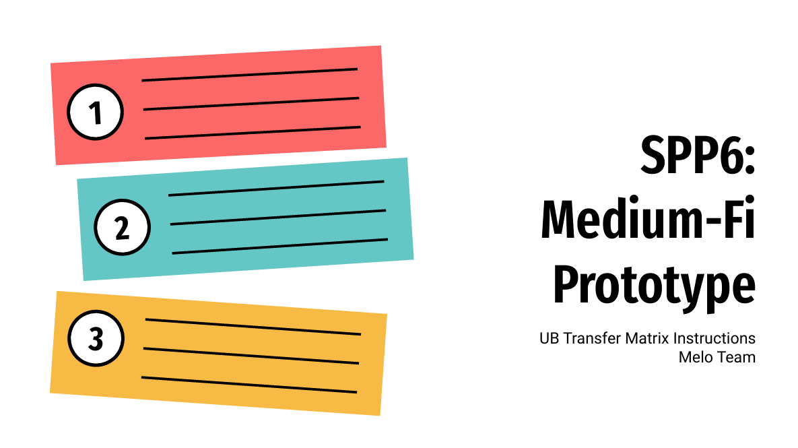

UB Transfer Matrix
UB Transfer Matrix
Presentations

SPP1 - Needfinding
Our initial needfinding process, including the interview methodology, insights from our conversations with diverse users, and an empathy map analysis. We’ll highlight key findings, initial user needs, and early insights that set the stage for our semester project’s focus.

SPP2 - POV & EXP
Present our team’s refined understanding of user needs, including key insights, revised Points of View (POVs), and selected “How Might We” (HMW) statements. It will also showcase the experience prototypes we tested, along with our findings and proposed solutions to address the identified problem space.

SPP4 - Concept Video
Presents an overview of our concept video project, highlighting our product’s value proposition, core tasks, and video planning storyboards. It includes detailed storyboards and a concise problem/solution overview to illustrate how our solution addresses user needs effectively.

SPP5 - Low-Fi Prototyping & Pilot Usability Test
Provides an overview of our low-fidelity prototype design process, from initial sketches to usability testing and analysis. It includes our design rationale, task flows, prototype structure, experimental method, and proposed UI improvements based on test results.

SPP6 - Medium-Fi Prototype
The design process, revisions, and medium-fidelity prototype developed for our interface, demonstrating key features, task flows, and usability improvements. It includes a detailed comparison of low- and medium-fidelity iterations, along with an analysis of the tools, trade-offs, and techniques used to achieve the prototype.
SPP7 - Interactive (Hi-Fi) Prototype
The design process, revisions, and medium-fidelity prototype developed for our interface, demonstrating key features, task flows, and usability improvements. It includes a detailed comparison of low- and medium-fidelity iterations, along with an analysis of the tools, trade-offs, and techniques used to achieve the prototype.
Reports

SPP2: P0V & EXP Report